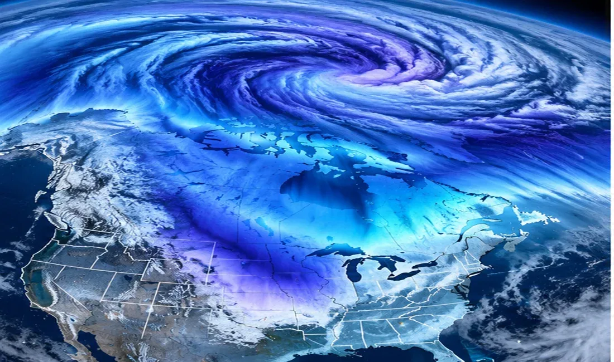

POLAR VORTEX DISRUPTION!
Rare early-November stratospheric warming could influence winter patterns—but a Texas freeze is not guaranteed.

A rare atmospheric disturbance is developing high above the Arctic, raising questions about what late November and December could bring to the United States.
NOAA’s October 31 monthly outlook says models indicate the potential for a disruption of the stratospheric polar vortex and a transition to sudden stratospheric warming during the following week. Such a November event is highly unusual.
The polar vortex is a circulation of strong winds in the stratosphere, far above the weather systems that produce everyday clouds and storms. When that circulation weakens or reverses, the atmosphere sometimes responds over subsequent weeks with a more distorted jet stream and greater opportunities for Arctic air to move south.
But a disruption is not a forecast of an imminent freeze in Texas. The response at ground level is uncertain, and a powerful El Niño may compete with or modify its influence. NOAA specifically identified competing climate signals in its November outlook.
For Texas, the practical question is whether later forecasts begin showing sustained high-latitude blocking and a southward displacement of the jet stream. Residents should follow official 6–10-day and 8–14-day outlooks rather than interpreting a polar-vortex headline as an immediate cold-weather warning.